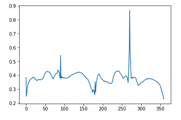
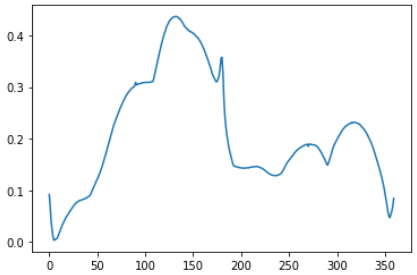
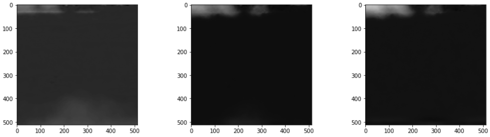

Može neki hint za 8.1.1., prvi zadatak? Slike nisu iste veličine. Što treba napraviti u tom slučaju? Paddati manju sliku ili resizeati veću?
Emma63194 Nisam siguran koji je to zadatak (nisam pri laptopu) ali zar to nije poenta da template (croppana slika auta) bude manja u onoj funkciji?
SuperSaiyano Je, da. Nije mi na prvu bilo skroz jasno što se tu dešava, ali sada mi je jasnije. Hvala na odgovoru!
Kako treba rijesit 7.5.1 zadatak pod 3 sa energijom? Kad oduzmem mean od slike dobijem negativne vrijednosti koje funkcija greycomatrix ne priznaje.
jel postoji burza grupa za 4. labos?
Kako ste u 8. bilježnici, 8.1.1., 6. zadatak riješili ValueError: Image must be larger than template.? Zadane slike su iste veličine. Probala sam ovu koja treba biti template malo smanjiti, ali dobivam isti error i dalje.
ValueError: Image must be larger than template.
Emma63194 ja sam paddao jednu od slika (ona koja će biti veća u fji): padded_img1 = np.zeros((500, 500)) padded_img1[:img1.shape[0],:img1.shape[1]] = img1
padded_img1 = np.zeros((500, 500))
padded_img1[:img1.shape[0],:img1.shape[1]] = img1
SuperSaiyano Jel ideja da tu veću sliku rotiramo ili je svejedno koju uzmemo?
Kako nacrtati krivulju u 8.1.1.,6. zadataka? Za svaku matricu posebno ili sve na isti graf? To je ipak 360 matrica ili crtamo samo za max vrijednost svakoj zasebnoj matrici?
BillIK samo za max vrijednost
For the same image display the results if you select a threshold t+0.2 or t−0.2 instead of threshold t selected before. Describe what happened.
Jel nije ovo malo premala razlika da bi se išta značajno dogodilo?
🤡 ili tu možda misle na 20%?
🤡 Ne znam jesam li dobro shvatila taj dio, ali ja sam uzela 20% od max vrijednosti (255) i to ispadne 51 pa plus/minus to.
🤡 Ne znam što je to, stavila sam mislim samo vrijednost 1. Opet, ne znam jel to točno.
🤡 Da, toliko mi ispadne.
sta ste uzeli kao low_sigma param za DoG operator?
jel vam Max u 8.1.1. 2) ispadnu (293, 40)?
Emma63194 jel ti mozda graf u 8. ispadne ovak? 
🤡 Nisam taj još riješila, imala sam neke errore. Sutra ću dovršiti pa javim.
🤡 Ovako sam dobila:

Emma63194 Nisam siguran da je bitno, ja sam dobio graf kao 🤡
kak vizualizirati optical flow u zadnjem zadatku?
🤡 +1
🤡 Možda doslovno kao sliku? Tipa, ovak neš:

kako ste upogonili imrotate funkciju? sta god napisem baca mi error
AE koliko sam skuzio imrotate je deprecated, koristio sam samo rotate umjesto toga i radi mi oke